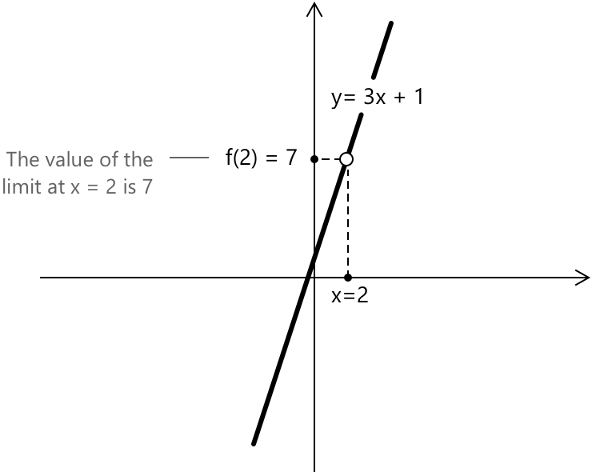
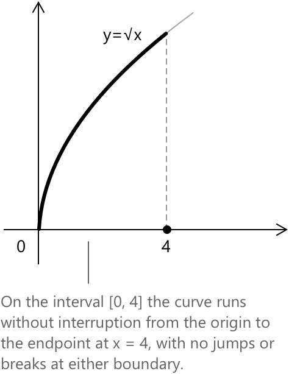

Неперервні функції
Неперервна функція в точці
Поняття неперервності функції використовується для того, щоб визначити, чи поводиться функція передбачувано поблизу точки, без стрибків, розривів або різких змін. Формально, функція \( y = f(x) \) називається неперервною в точці \( x_0 \), якщо виконується наступна границя:
\[ \lim_{x \to x_0} f(x) = f(x_0) \]
Іншими словами, це означає, що границя функції при наближенні \( x \) до \( x_0 \) існує і є скінченною, і що ця границя дорівнює значенню функції в точці \( x_0 \). Наприклад, функція \( f(x) = \sin(x) \) є неперервною на всій множині \( \mathbb{R} \). У кожній точці \( x_0 \in \mathbb{R} \) границя \( \sin(x) \) при \( x \to x_0 \) існує, є скінченною та задовольняє рівності \( \lim_{x \to x_0} \sin(x) = \sin(x_0) \).
Власне, розглянемо \( x_0 = \frac{\pi}{2} \) як конкретний приклад. Маємо:
\[ \lim_{x \to \frac{\pi}{2}} \sin(x) = \sin\!\left(\frac{\pi}{2}\right) = 1 \]
Умова неперервності для функції синуса виконується в точці \(x_0\), і такі ж міркування поширюються на всі інші точки в області визначення.
Інший спосіб виразити неперервність функції в точці — зазначити, що праві та ліві границі функції в цій точці існують, є скінченними та збігаються зі значенням функції. Стосовно довільної точки \( x_0 \), це можна записати так:
\[ \lim_{x \to x_0^+} f(x) = \lim_{x \to x_0^-} f(x) = f(x_0) \]
Ця умова гарантує, що графік функції не має розривів або стрибків у точці \(x_0.\)
Ця властивість очевидна на графіку \( f(x) = \sin(x) \). У кожній точці \( x_0 \) крива наближається до одного й того самого значення як зліва, так і справа, і це значення збігається з \( f(x_0) \). Графік утворює неперервну, безперервну лінію по всій прямій, і ця візуальна неперервність відображає аналітичну умову того, що односторонні границі функції та її значення рівні.
Приклад 1
Розглянемо поліноміальну функцію:
\[ f(x) = 3x + 1 \]
Нас цікавить, чи є ця функція неперервною в точці \( x_0 = 2 \). Для цього спочатку обчислимо границю функції при наближенні \( x \) до \(2\):
\[ \lim_{x \to 2} f(x) = \lim_{x \to 2} (3x + 1) = 3 \cdot 2 + 1 = 7 \]
Далі обчислимо значення функції безпосередньо в точці:
\[ f(2) = 3 \cdot 2 + 1 = 7 \]
Оскільки функція є поліномом першого ступеня, її графіком є пряма лінія.

Границя існує, є скінченною і збігається зі значенням функції в цій точці. Отже, ми можемо зробити висновок, що
\[ \lim_{x \to 2} f(x) = f(2) = 7 \]
Це підтверджує, що функція \( f(x) = 3x + 1 \) є неперервною при \( x = 2.\)
Такі міркування поширюються і на поліноміальні функції вищих ступенів. Наприклад, квадратична функція \( f(x) = x^2 \) має параболічний графік, і для кожної точки \( x_0 \in \mathbb{R} \) границя існує, є скінченною та задовольняє рівності \( \lim_{x \to x_0} x^2 = x_0^2 = f(x_0) \).
Неперервна функція на проміжку
Коли ми розглядаємо проміжок замість однієї точки, ми кажемо, що функція \( y = f(x) \) є неперервною на замкненому та обмеженому проміжку \([a, b]\), якщо виконується наступна умова:
\[ \lim_{x \to x_0} f(x) = f(x_0) \quad \forall \, x_0 \in (a, b) \]
Так само як і з неперервністю в точці, неперервність на замкненому проміжку може бути виражена через односторонні границі на кінцях проміжку. Зокрема, функція повинна задовольняти:
\[ \begin{align} \lim_{x \to a^+} f(x) &= f(a) \\[6pt] \lim_{x \to b^-} f(x) &= f(b) \end{align} \]
Наприклад, функція \( f(x) = \sqrt{x} \), визначена на проміжку \([0, 4]\), є неперервною в кожній внутрішній точці, оскільки функція квадратного кореня є неперервною на \( (0, +\infty) \).

На лівому та правому кінцях умови односторонньої неперервності відповідно задоволені: \[ \begin{align} \lim_{x \to 0^+} \sqrt{x} &= 0 = f(0) \\[6pt] \lim_{x \to 4^-} \sqrt{x} &= 2 = f(4) \end{align} \]
Отже, всі три умови неперервності виконані, і \( f(x) = \sqrt{x} \) є неперервною на \([0, 4]\).
Функції, неперервні на своїй області визначення
Наступні функції є неперервними на своїх відповідних областях визначення:
- Поліноміальні функції вигляду \(P(x) = a_0 + a_1 x + \cdots + a_n x^n.\)
- Раціональні функції.
- Показникова функція \( a^x.\)
- Логарифмічна функція \( \log_a x. \)
- Функція модуля \( |x|. \)
- Тригонометричні функції синус \( \sin x \), косинус \( \cos x \), та тангенс \( \tan x \), а також їхні обернені функції.
Розрив
Якщо функція не є неперервною в заданій точці, кажуть, що вона має розрив у цій точці. Розриви виникають, коли локальна стабільність, що забезпечується неперервністю, порушується. Зокрема, це може статися, якщо функція не визначена в точці, якщо границя не існує, або якщо границя існує, але відрізняється від значення функції. Розриви поділяють на три взаємовиключні типи:
- Усунуваний розрив виникає, коли границя функції існує і є скінченною, але функція або не визначена в точці, або її значення не дорівнює цій границі.
- Стрибок розриву виникає, коли і ліва, і права границі існують і є скінченними, але ці границі не рівні між собою.
- Неусунуваний розрив другого роду (нескінченний розрив) присутній, коли принаймні одна з односторонніх granic є нескінченною, внаслідок чого функція розбігається біля точки замість того, щоб наближатися до скінченного значення.
Одна точка не може одночасно мати більше одного типу розриву.
Розглянемо приклад простої функції, яка не є неперервною: функція знака, що позначається як \( \operatorname{sign}(x) \). Ця функція визначається так:
\[ \operatorname{sign}(x) = \begin{cases} -1 & \text{якщо } x < 0 \\[0.5em] \phantom{-}0 & \text{якщо } x = 0 \\[0.5em] \phantom{-}1 & \text{якщо } x > 0 \end{cases} \]
На перший погляд це може здатися простим, але ця функція не є неперервною при \( x = 0 \). Щоб бути неперервною в точці, границя зліва та границя справа повинні існувати і дорівнювати значенню функції в цій точці. Дослідимо границі:
- Коли \( x \to 0^- \), функція наближається до \( -1. \)
- Коли \( x \to 0^+ \), функція наближається до \( 1. \)
Отже, маємо:
\[ \begin{align} \lim_{x \to 0^-} \operatorname{sign}(x) &= -1 \\[6pt] \lim_{x \to 0^+} \operatorname{sign}(x) &= 1 \end{align} \]
Оскільки дві односторонні границі не рівні, загальна границя при \( x \to 0 \) не існує. І хоча функція визначена при \( x = 0 \), ми не можемо прирівняти її до значення границі. Таким чином, функція має розрив при \( x = 0 \), хоча вона є неперервною всюди інде на \( \mathbb{R} \setminus \{0\} \).
Властивості
Сума або різниця двох неперервних функцій також є неперервною. Припустимо, що \( f \) та \( g \) є функціями з \( \mathbb{R} \) в \( \mathbb{R} \), і нехай \( x_0 \) буде точкою, що належить і до \( \operatorname{Dom}(f) \), і до \( \operatorname{Dom}(g) \), де обидві функції є неперервними. Тоді функція \( f + g \), а також \( f - g \), є неперервною в точці \( x_0 \). Іншими словами, якщо і \( f \), і \( g \) є неперервними в точці \( x_0 \), тобто:
\[ \begin{align} \lim_{x \to x_0} f(x) &= f(x_0) \\[6pt] \lim_{x \to x_0} g(x) &= g(x_0) \end{align} \]
тоді сума \( f + g \) також є неперервною в \( x_0 \), що означає:
\[ \lim_{x \to x_0} [f(x) + g(x)] = f(x_0) + g(x_0) \]
Добуток двох неперервних функцій є неперервною функцією. Нехай \( f, g : \mathbb{R} \to \mathbb{R} \), і нехай \( x_0 \in \operatorname{Dom}(f) \cap \operatorname{Dom}(g) \) буде точкою, де обидві функції є неперервними. Тоді функція добутку \( f \cdot g \) є неперервною в \( x_0 \). Іншими словами, якщо:
\[ \begin{align} \lim_{x \to x_0} f(x) &= f(x_0) \\[6pt] \lim_{x \to x_0} g(x) &= g(x_0) \end{align} \]
тоді:
\[ \lim_{x \to x_0} [f(x) \cdot g(x)] = f(x_0) \cdot g(x_0) \]
Частка двох неперервних функцій залишається неперервною за умови, що знаменник не перетворюється на нуль. Нехай \( f, g : \mathbb{R} \to \mathbb{R} \), і нехай \( x_0 \in \operatorname{Dom}(f) \cap \operatorname{Dom}(g) \) буде точкою, де обидві функції є неперервними і такою, що \( g(x_0) \ne 0 \). За цих умов функція частки \( f/g \) є неперервною в \( x_0 \). Іншими словами, якщо маємо:
\[ \begin{align} \lim_{x \to x_0} f(x) &= f(x_0) \\[6pt] \lim_{x \to x_0} g(x) &= g(x_0) \\[6pt] g(x_0) &\ne 0 \end{align} \]
тоді виконується наступна рівність:
\[ \lim_{x \to x_0} \left[ \frac{f(x)}{g(x)} \right] = \frac{f(x_0)}{g(x_0)} \]
Композиція неперервних функцій також є неперервною функцією. Нехай \( f, g : \mathbb{R} \to \mathbb{R} \), і нехай \( x_0 \in \operatorname{Dom}(f) \) буде точкою, де \( f \) є неперервною. Припустимо, що \( g \) є неперервною в \( y_0 = f(x_0) \). Тоді складена функція \( g \circ f \) є неперервною в \( x_0 \), що означає:
\[ \lim_{x \to x_0} [g(f(x))] = g\left( \lim_{x \to x_0} f(x) \right) = g(f(x_0)) \]
Якщо функція \( f \) є неперервною та суворо монотонною на проміжку \( I \subset \mathbb{R} \), то вона є оберненою на \( I \), і її обернена функція \( f^{-1} \) залишається неперервною на \( f(I) \). Еквівалентно, для будь-якого \( y_0 = f(x_0) \) виконується наступне:
\[ \lim_{y \to y_0} f^{-1}(y) = x_0 \]
Сувора монотонність гарантує, що функція не змінює напрямку, тим самим запобігаючи відображенню різних близьких значень аргументу в одне й те саме значення функції. За відсутності монотонності самої неперервності недостатньо, щоб забезпечити неперервність оберненої функції.
Від неперервності до рівномірної неперервності
Неперервність є локальною властивістю. У кожній точці \( x_0 \) та для кожного \( \varepsilon > 0 \) існує таке \( \delta > 0 \), яке може залежати від \( x_0 \), що
\[ |x – x_0| < \delta \to |f(x) – f(x_0)| < \varepsilon \]
Значення \( \delta \) може змінюватися від точки до точки. У областях, де функція швидко зростає, часто необхідні менші значення \( \delta \).
Рівномірна неперервність розширює цю концепцію, накладаючи єдине глобальне обмеження. Функція \( f : A \to \mathbb{R} \) є рівномірно неперервною на \( A \), якщо для кожного \( \varepsilon > 0 \) існує таке \( \delta > 0 \), що
\[ |x - y| < \delta ;\Rightarrow; |f(x) - f(y)| < \varepsilon \quad \forall \, x, y \in A \]
У цьому контексті \( \delta \) залежить виключно від \( \varepsilon \) і не залежить від конкретних точок в області визначення. Загалом, маємо:
- Неперервність не означає рівномірної неперервності.
- Рівномірна неперервність означає неперервність.
Наприклад, функція \( f(x) = x^2 \) є неперервною на \( \mathbb{R} \), але вона не є рівномірно неперервною на \( \mathbb{R} \), оскільки жодне єдине \( \delta \) не може регулювати її зростання на всій прямій.
Вибрана література
- Гарвардський університет, Н. Елдредж. Границі функцій та неперервні функції
- Міжнародний університет Флориди, Г. Мезіані. Неперервні функції
- Каліфорнійський університет у Дейвісі, Дж. Хантер. Неперервні функції